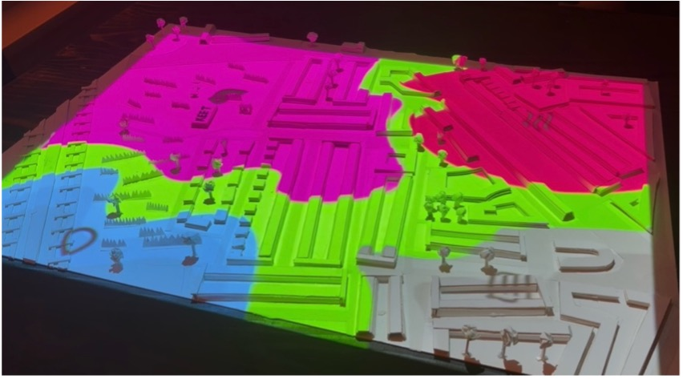
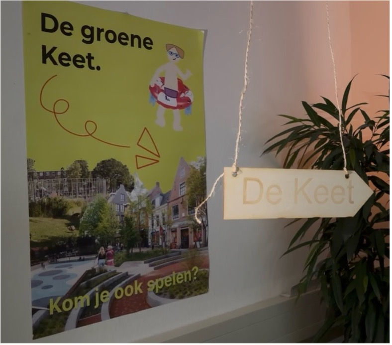
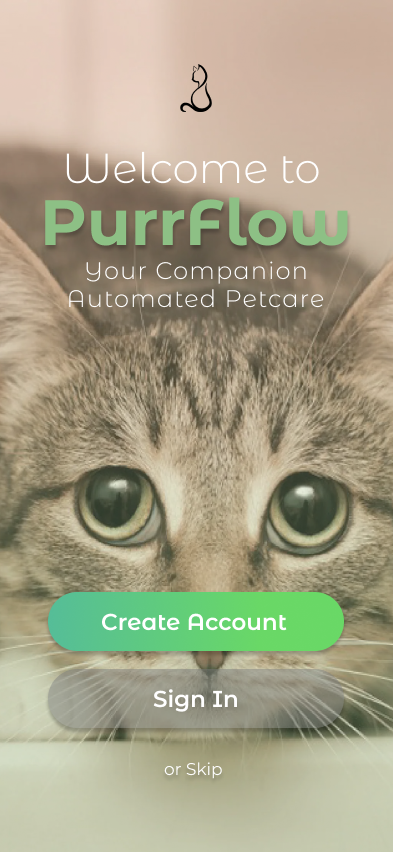
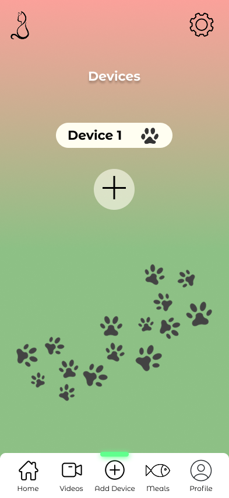
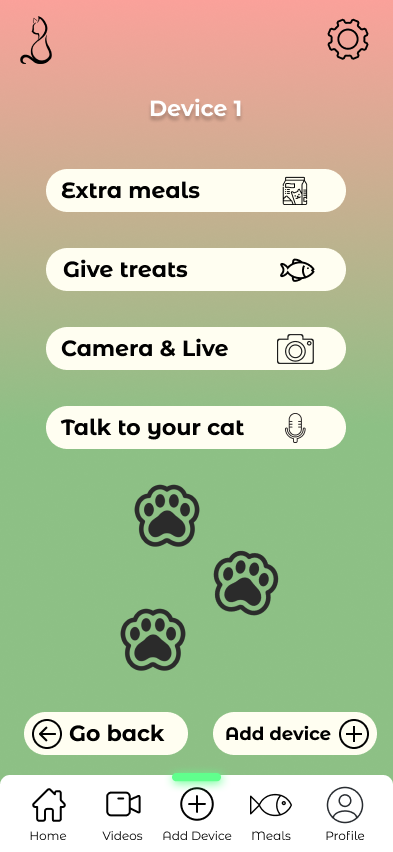
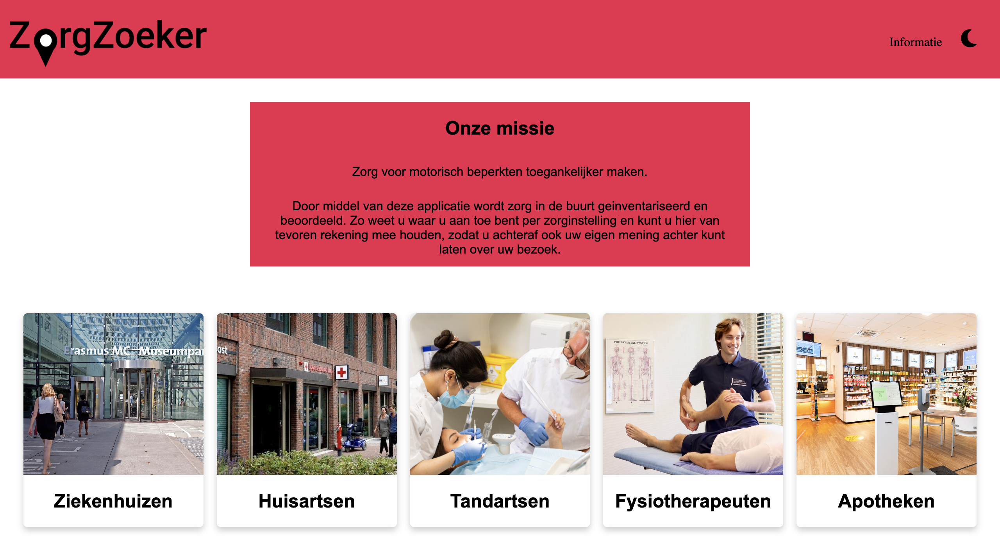
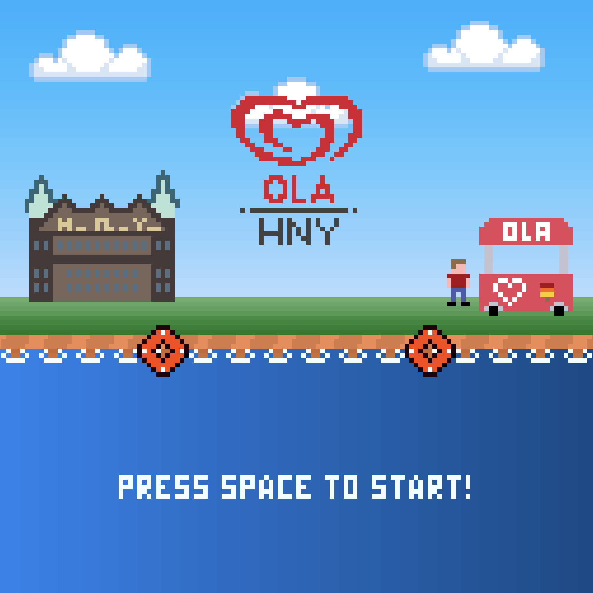
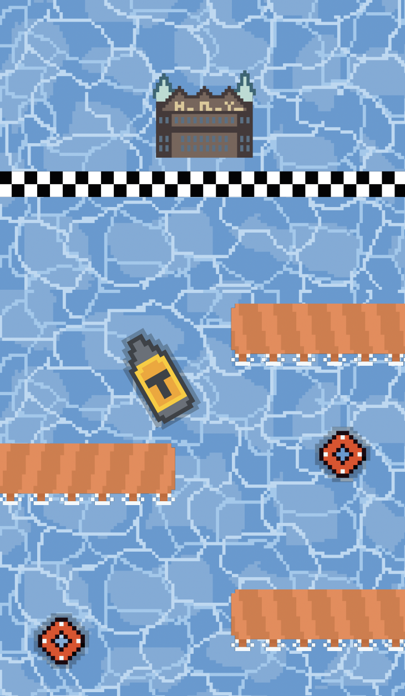
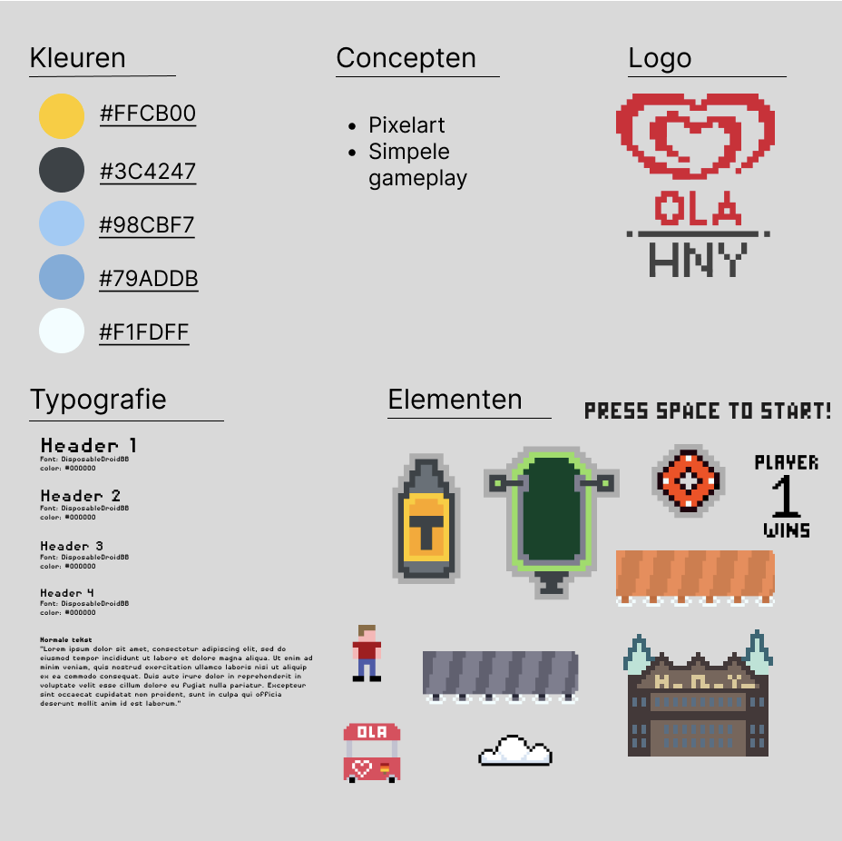

Mijn Portfolio
Op deze pagina laat ik mijn werk van mijn tijd op de Hogeschool Rotterdam zien.
Mijn Communication & Multimedia Design projecten
De groene straten van Hillesluis
In mijn tweede jaar CMD (2026) werkte ik in het laatste halfjaar met mijn team, aan een opdracht van Emi op Zuid: De Groene Straten van Hillesluis. De opdracht vond ik interessant, vooral omdat hij zo relevant is. De stad warmt op en Hillesluis heeft het extra warm door de versteende wijk met weinig groen. Onze doelgroep waren de bewoners van Hillesluis en Rotterdam-Zuid. Het proces was eerst lastig, want we merkten snel dat veel mensen in Zuid weinig of geen Nederlands spreken en niet goed op de hoogte zijn van het verband tussen verstening, hitte en groen. Daarom ontwikkelden we een ervaring die voor iedereen makkelijk te begrijpen is en waarin bewoners spelenderwijs leren hoe ze zelf hun straat kunnen vergroenen. Het werd een spel met vier minigames, waarbij je badges verzamelt met tips die je direct zelf kunt toepassen. Daarbij hoort een maquette van de wijk rondom de Wieck met een projectie, die laat zien hoe de wijk groener kan worden.
De opdrachtgever was Emi op Zuid. Mijn rol was die van ontwerper. Samen met een teamgenoot maakte ik de maquette, mijn eerste ooit. Ik moest uitzoeken hoe je een plattegrond omzet naar een 3D-model dat ook nog klopt met de projectie. We bouwden bewust een herkenbaar stuk van de wijk na, zodat bewoners hun eigen omgeving terugzien. Daarnaast hielp ik mee aan het design van de game en maakte ik de poster voor de eindexpo. Binnen de projectie nam ik ook een deel van de leiding op me door te bepalen wie welk onderdeel maakte en waar het terecht moest komen. De maquette is het onderdeel waar ik het meest trots op ben.


ANWB
In mijn eerste jaar CMD (2025) werkte ik tijdens het laatste blok met mijn team, aan een project voor de ANWB. Het is het project waar ik tot nu toe het meest trots op ben. De ontwerpvraag kwam voort uit het thema sociale innovatie en betaalbare mobiliteit. Voor veel Nederlanders wordt autoonderhoud steeds duurder en ingewikkelder, waardoor het vaak wordt uitgesteld, met hogere kosten en soms verlies van mobiliteit als gevolg. Wij ontwierpen webpagina’s voor het ANWB AutoFit-platform die gebruikers meer grip geven op hun onderhoud. We richtten ons op mensen met een beperkt budget, een tweedehandsauto en weinig technische kennis. Na interviews, een design critic en meerdere testrondes werkten we van papieren schetsen toe naar een klikbaar prototype in Figma. Dat prototype was mobile-first en volledig in de huisstijl van de ANWB uitgewerkt.
Werken voor een opdrachtgever als de ANWB was een bijzondere ervaring, en ik had bovendien een fijn en hecht team. Mijn rol was het ontwerpen van de onderhoudschecker. Dat is een stappenplan met filmpjes waarmee mensen die minder vaak naar de garage kunnen of willen gaan, zelf basiscontroles aan hun auto uitvoeren, zoals het oliepeil, de bandenspanning en de ruitenwissers. Merk je dat er iets mis is, dan verwijst de checker je door naar garages in de buurt. Daarnaast nam ik een van de interviews af en hield ik tijdens de design critic de feedback bij. Het uitwerken van mijn deel in Figma vond ik het leukste onderdeel, omdat ik daar voor het eerst echt dieper in ging met componenten en auto-layout. Daardoor sloot mijn deel van het prototype goed aan bij de echte ANWB-site.


Purrflow
In mijn eerste jaar CMD (2024) hebben mijn team en ik tijdens het tweede blok een app ontworpen voor een automatische kattenvoerbak. De opdracht was om een gebruiksvriendelijke app te ontwikkelen waarmee katteneigenaren hun kat op afstand kunnen voeren. Onze doelgroep bestond uit jonge werkenden tussen de 20 en 40 jaar met één of meerdere katten. We bedachten Purrflow, een app waarmee je voedingsschema’s beheert, live meekijkt met je kat en zelfs tegen ze kunt praten. In drie iteraties werkten we van schetsen en een papieren prototype toe naar een volledig klikbaar prototype in Figma, waarbij we ons ontwerp na elke test aanscherpten.
De opdrachtgever voor dit project was WARP, een digital innovation firm die slimme producten en diensten ontwikkelt. Tijdens de eindpresentatie was de opdrachtgever enthousiast over het idee om meerdere voerbakken aan één app toe te voegen. Binnen het team was ik verantwoordelijk voor het onderdeel extra’s: de extra maaltijden, de live feed en de spraakopnames. Daarnaast bedacht ik zelf de functie om meerdere apparaten toe te voegen, een idee dat we uiteindelijk in het eindontwerp hebben opgenomen en dat onze app onderscheidde van de rest.



Mijn Creative Media & Game Technologies projecten
Zorgzoeker
In mijn eerste jaar bij CMGT (2023) gingen we aan de slag met een webservice voor mensen met een motorische beperking in de zorg. De ontwerpvraag was hoe we mensen met een motorische beperking inzicht konden geven in de toegankelijkheid van zorginstellingen. Hiervoor hebben we een webapplicatie bedacht waarin gebruikers kunnen zien welke faciliteiten verschillende zorginstellingen aanbieden. Ook kunnen gebruikers zelf reviews achterlaten om de toegankelijkheid van deze locaties te beoordelen.
Samen met mijn team heb ik aan dit project gewerkt. Mijn bijdrage bestond onder andere uit het maken van low-fidelity schetsen en het meedenken over het ontwerp. Uiteindelijk hebben we een volledig clickable prototype gemaakt in Figma en dit vervolgens met JavaScript en een API omgezet naar een werkende webservice. Hieronder is een plaatje te zien van de home pagina van onze webservice.

OLA Hotel New York
In mijn eerste jaar CMGT (2023) hebben mijn team en ik tijdens het projectvak een game ontworpen en gemaakt. De opdracht was om een game te ontwikkelen met de player types killer en submission. We bedachten OLA, een spel waarin een watertaxi en een amfibiebus het tegen elkaar opnemen bij Hotel New York. De watertaxi moet alle boeien en kades ontwijken en de finish bereiken, terwijl de amfibiebus probeert de watertaxi te pakken te krijgen.
Er was geen externe opdrachtgever; we hebben de game als team naar eigen invulling ontwikkeld. Binnen het team had ik de rol van hoofdontwerper en nam ik ook een deel van de teamleiding op me. Ik heb onder andere het grootste gedeelte van de pixel art gemaakt, waaronder de watertaxi, de achtergrond, het startscherm en verschillende andere sprites. Daarnaast hield ik de planning bij en hielp ik met het verdelen van de taken binnen het team.


